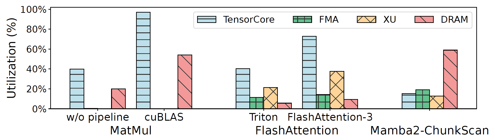
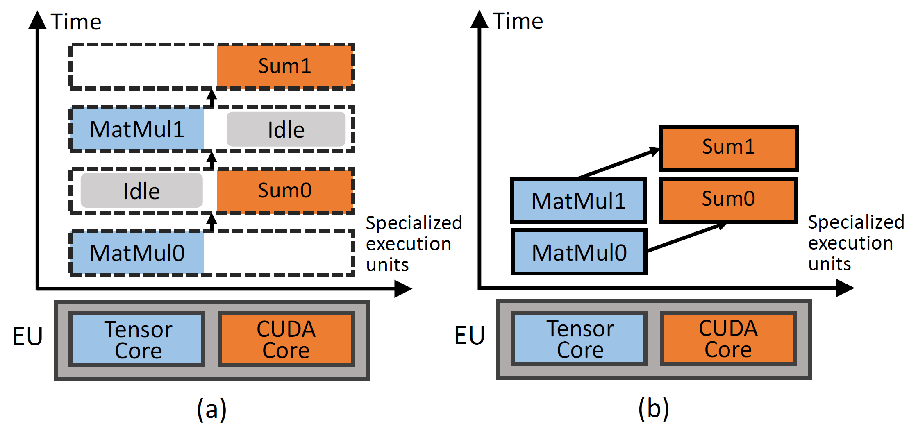
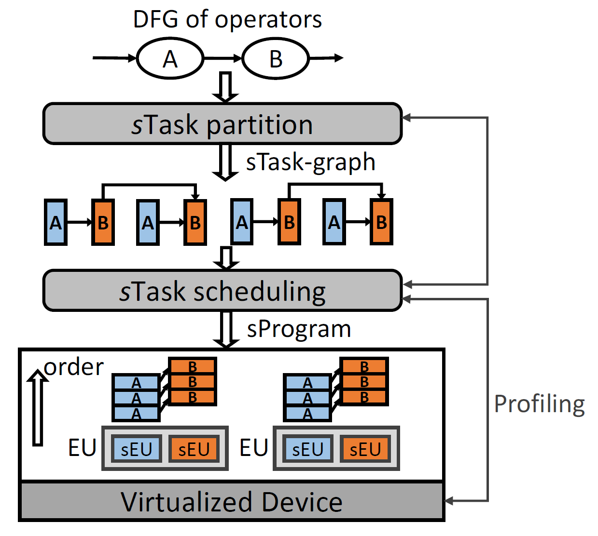
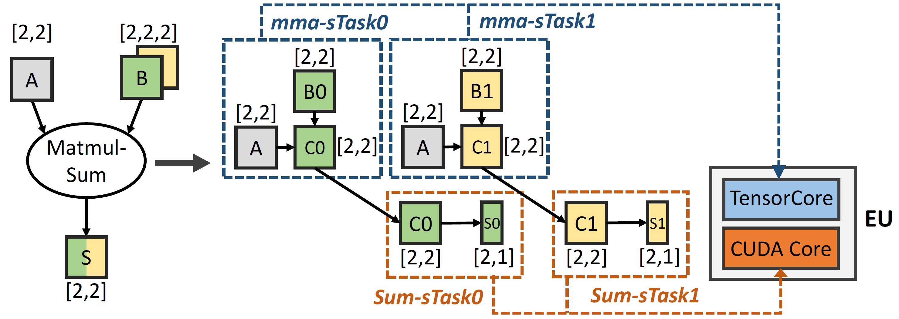
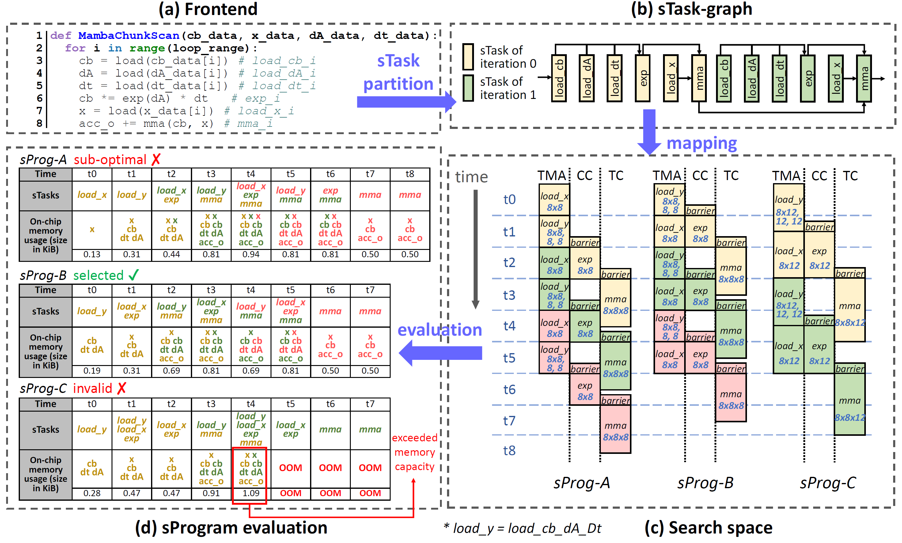
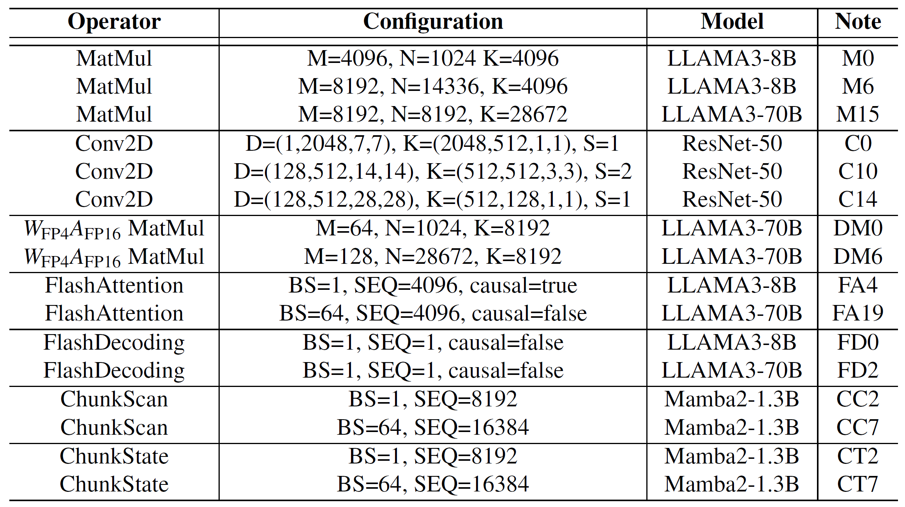
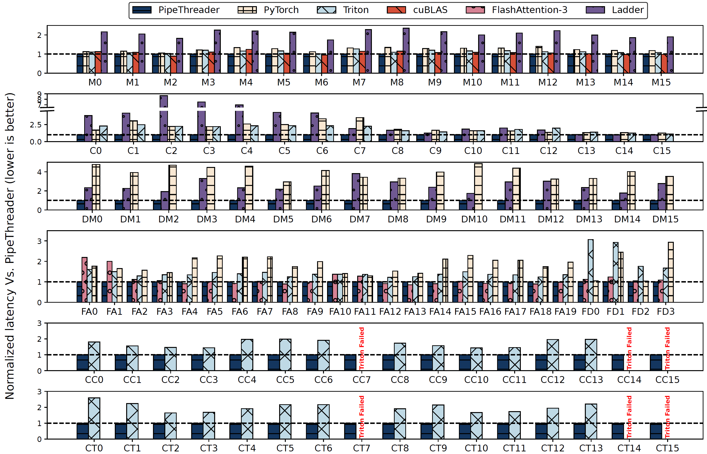
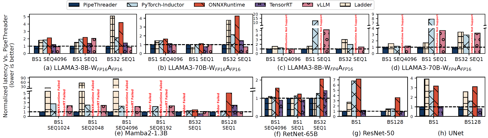
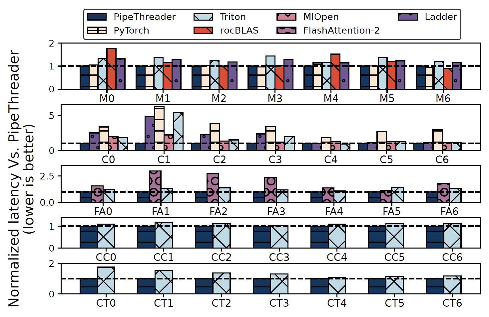

PipeThreader: Software-Defined Pipelining for Efficient DNN Execution
OSDI ’25
gpu
llm
attention
memory
systems
PipeThreader: Software-Defined Pipelining for Efficient DNN Execution
Background & Motivation
The Challenge: Increasing Complexity
- Hardware Evolution: Modern GPUs feature heterogeneous specialized units like TensorCores and Tensor Memory Accelerators (TMA) to meet the demands of large DNNs.
- Software Evolution: Developers fuse operators (e.g., FlashAttention) into single kernels to maximize data reuse and reduce memory pressure.
The Problem: Hardware Under-utilization
- Traditional GPU programming models treat SMs as uniform units, ignoring their internal heterogeneity.
- This leads to inefficient scheduling, where specialized units like tensor cores are often idle, waiting for other operations to complete.
- Expert-tuned kernels like FlashAttention-3 are required to improve utilization, but this process is difficult and time-consuming.

The Bottleneck: Manual Optimization
- Hand-crafting efficient pipeline schedules is difficult, error-prone, and sensitive to hardware architecture and model specifics.
- This approach is hard to generalize and not portable across different GPU types (e.g., NVIDIA vs. AMD) or for new models archs.

The Opportunity: Software-Defined Pipelining
- Since specialized hardware processes data at a large granularity (tensor tiles), scheduling can be effectively managed by software.
- Motivation: Shift pipeline scheduling from implicit, limited hardware control to explicit, powerful software control.
- This allows for the automatic discovery of sophisticated pipelines that fully exploit heterogeneous hardware.
System Design
System Overview
- PipeThreader takes a DNN operator graph and transforms it into an optimized, executable program.
- It introduces two key abstractions: specialized tasks (sTasks) and specialized execution units (sEUs) to enable fine-grained, pipeline-aware scheduling.

Core Abstractions: sTask & sEU
- sTask (Specialized Task): The basic unit of computation designed to run on a specific type of hardware unit.
- For example, a fused operation is broken into
mma-sTasksfor tensor cores andSum-sTasksfor CUDA cores, enabling them to run in parallel.
- For example, a fused operation is broken into
- sEU (Specialized Execution Unit): A hardware abstraction that exposes the heterogeneous units within each GPU SM (e.g., tensor core, TMA, CUDA core) to the compiler.

From sTask-Graph to sProgram
- sTask-Graph: The input operator graph is partitioned into an
sTask-graph, which represents the computation and its fine-grained data dependencies at the tile level.- PipeThreader supports both spatial and reduction partitioning to unlock more pipelining opportunities.
- sProgram: The scheduler maps the
sTask-graphto the hardware’s sEUs, generating ansProgram. This is a concrete execution plan specifying which sTask runs on which sEU and in what order.
From sTask-Graph to sProgram

Two-Level Scheduling Policy
- PipeThreader’s scheduler finds an optimal
sProgramby balancing tiling and pipeline parallelism. - Inter-EU Scheduling: Partitions the workload (
sTask-graph) across the GPU’s main execution units (EUs/SMs) for SPMD-style data parallelism. - Intra-EU Scheduling: Within each EU, a greedy algorithm schedules sTasks onto the heterogeneous sEUs to create an efficient pipeline.
- Guided by a profiler to ensure schedules are valid and respect on-chip memory constraints.
Evaluation
Experimental Setup
- Hardware:
- NVIDIA H100 (80GB)
- AMD Instinct MI300X (192GB)
- Workloads:
- LLMs (LLAMA3, RetNet)
- State Space Models (Mamba2)
- CNNs (ResNet-50, UNet).
- Baselines:
- SOTA compilers: OpenAI Triton, Ladder, PyTorch-Inductor
- Vendor libraries: cuBLAS, TensorRT
- Expert-tuned kernels: FlashAttention-3

Operator Performance
- FA: 1.07x average speedup over the expert-tuned FlashAttention-3.
- Mamba: Up to 1.99x speedup for ChunkScan and 2.59x for ChunkState over the Triton.
- MM: Matches cuBLAS performance, much better than other compilers.

End-to-End Performance
- The benefits at the operator level translate to significant end-to-end gains.
- LLAMA3 (FP16): Outperforms PyTorch-Inductor by 1.79x, TensorRT by 1.28x, and vLLM by 1.10x on average.
- Mamba2: Achieves up to 2.76x speedup over PyTorch-Inductor.
- ResNet-50 & UNet: Shows speedups of 2.54x over PyTorch-Inductor and is comparable to TensorRT.

Portability: Performance on AMD MI300X
- PipeThreader’s abstractions generalize well to different hardware architectures.
